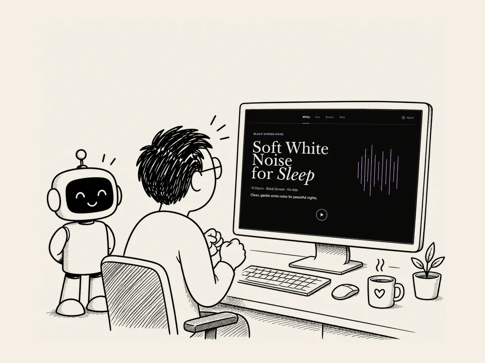

22.
Enfin. Le site est en ligne.
J’ai mobilisé ChatGPT et Codex.
J’ai tout vérifié plusieurs fois.
« Suis tout le parcours d’un utilisateur, du début à la fin.
Vérifie tout soigneusement. »
L’IA a passé un bon moment à tout examiner
et m’a dit qu’il n’y avait aucun problème.
Je ne lui faisais toujours pas complètement confiance.
Alors cette fois,
je me suis mis à la place d’un utilisateur
et j’ai tout vérifié moi-même, un élément après l’autre.
Un bouton.
Un point.
Une flèche.
J’ai appuyé sur Play,
je suis passé d’un écran à l’autre,
je suis revenu en arrière.
J’ai tout vérifié soigneusement.
Enfin,
j’ai envoyé les fichiers sur le serveur
et connecté le nom de domaine.
Est-ce que mon site était vraiment sur Internet, maintenant ?
Je me suis assis devant mon ordinateur.
J’ai tapé moi-même l’adresse dans le navigateur.
Entrée.
Mon cœur battait à tout rompre.
Et si le site ne s’affichait pas ?
La première page est apparue.
Ah.
Ça y est.
J’avais réussi.
Un bouton Play.
Une forme d’onde.
Même cette petite ligne qui bouge au rythme du son.
Il n’y avait pas un seul détail auquel je n’avais pas prêté attention.
Peu de temps auparavant,
je pensais que créer un site web
était quelque chose qui n’avait rien à voir avec moi.
Et maintenant,
le site que j’avais créé était là,
sur Internet.
BLACKSCREENNOISE.COM
